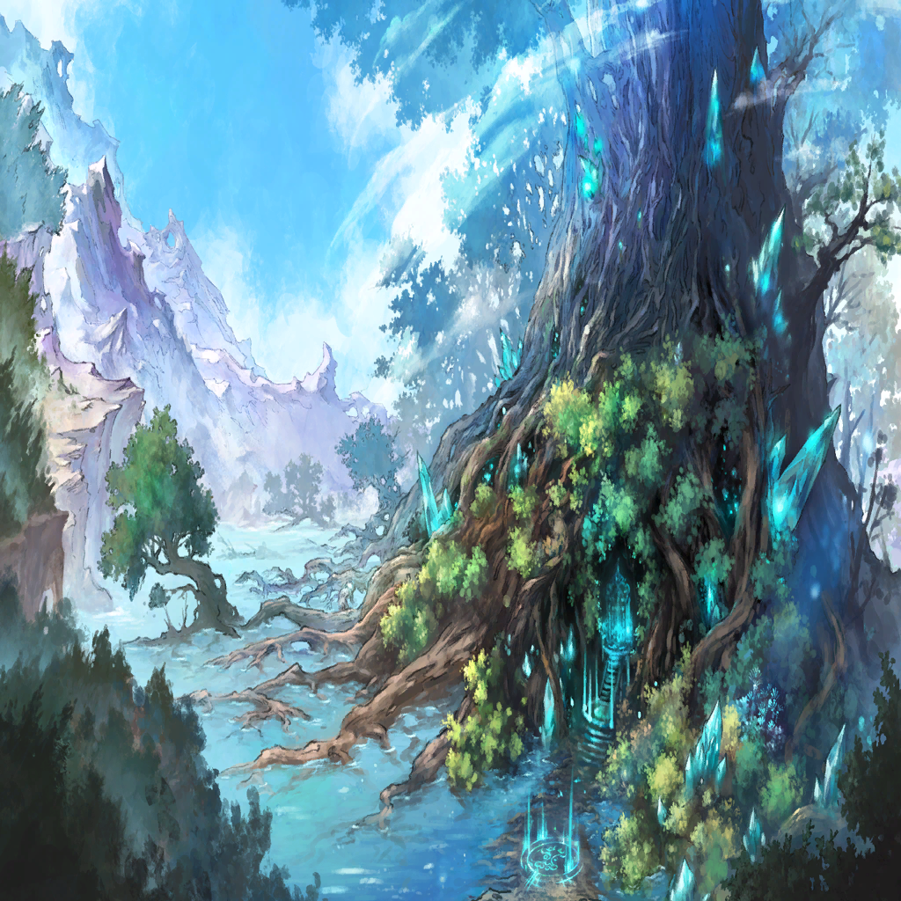

マルタ
どうして…
私はセフィロンに捧げられたはず…

カムイ
おそらく原因は――あれだ

マルタ
里が…燃えてる…？
カムイ
セクリディスの軍勢だ…
マルタ
結界で守られているはずなのに…
カムイ
まずは――

ジャム
カムイ
マルタ
里の土地に染み付いたんだわ…
マルタ
カムイ
俺たちが浄化すればいい！
カムイ
だから今は――
マルタ
ヒシャームたちを避難させないと！
カムイ
| |
|  | |
マルタ |
…カム、イ？ どうして… 私はセフィロンに捧げられたはず… |
カムイ |
儀式が中断したんだ おそらく原因は――あれだ |
| |
マルタ |
そんな!? 里が…燃えてる…？ |
カムイ |
奴らは王都の―― セクリディスの軍勢だ… |
マルタ |
この里はセフィロンの浄化の力による 結界で守られているはずなのに… |
カムイ |
とにかく、ここを出よう まずは―― |
| |
ジャム |
アァァァァァァ!! |
カムイ |
里の中に、ジャムが!? |
マルタ |
私が受け止めるはずだった呪いが、 里の土地に染み付いたんだわ… |
マルタ |
こうなってしまったら、もう… |
カムイ |
ジャムになったのなら、 俺たちが浄化すればいい！ |
カムイ |
イシドたちも、じき戻ってくるはずだ だから今は―― |
マルタ |
…ッ！ 里のみんなや、 ヒシャームたちを避難させないと！ |
カムイ |
ああ、行こう！ |